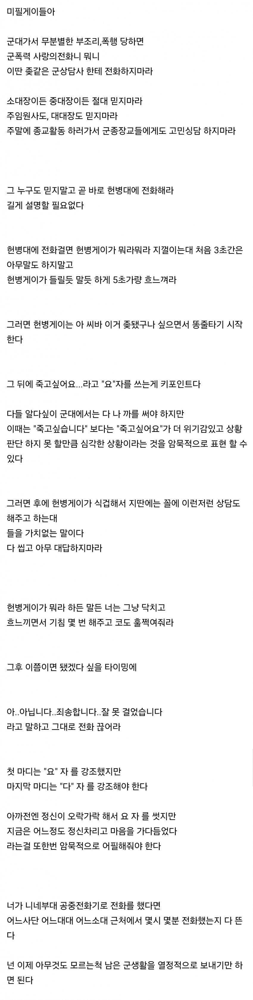

군대가서 부조리 당할 때 꿀팁
댓글
-악용하면 난리나겠네
씨발 저건 익스터미나투스 날리는 거 아냐?
진짜 꿀팁 맞나?
지통실에있는데 위병소에서 사단헌병이라는데 들여보냅니까? 연락왔을때 정말 힘든하루였어
간부들은 사병애들이 몇달후면 민간인이고, 민원창구가 온사방에 널려있다는걸 몰라.
다른부대 소문중에 전출왔단놈 썰 생각나네
선임들이 단체로 후임들 심하게 괴롭혀서 한놈이 밤에 선임들 생활관 가서 주동자 대가리 하이바로 찍어버리고 중대장한테 끌려가선 그새끼들 잘때 야전삽으로 찍어버릴거라고 해서 전출왔단놈 있다고 했는데
간부들이 해결 안해주니 그런식으로도 가나보더라 ㅅㅂ
한번 더 하지